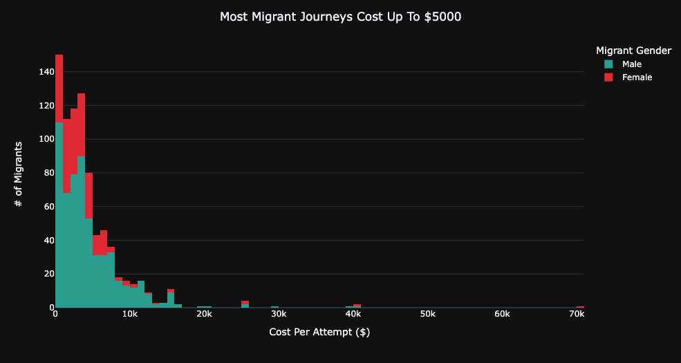
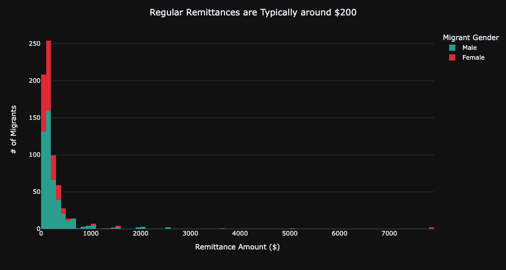

Characterizing Gendered Migration Journeys
Meera Gregerson, Kwesi Afrifa, & Sarah Lohmar
The Central American countries of Guatemala, Honduras, and El Salvador are known as the Northern Triangle.
In a recent survey conducted by the World Food Program within the Northern Triangle,
43% of respondents indicated that, given the opportunity, they would
like to move for an extended time to another country.
Various economic, political, and social factors drive hundreds of thousands
of people from this region each year to leave home in pursuit of better
prospects. The journey is long and often expensive, lonely, and dangerous.
Most often, external migrants from this region have the USA as their destination.
In order to better understand the experiences of people migrating,
let alone to begin to address the challenges faced by such people, it
is critical to examine how one's gender affects one's migration experience.
In WPF's survey, a very small percentage of respondents identified as both genders,
or preferred not to say. The experiences of these migrants are equally important,
however for this exploration we have chosen to only examine those of people
who fall within the binary, as there are enough survey respondents to get an
understanding of the broader experience by gender.
Various economic, political, and social factors drive hundreds of thousands of people from this region each year to leave home in pursuit of better prospects. The journey is long and often expensive, lonely, and dangerous. Most often, external migrants from this region have the USA as their destination.
In order to better understand the experiences of people migrating, let alone to begin to address the challenges faced by such people, it is critical to examine how one's gender affects one's migration experience.
In WPF's survey, a very small percentage of respondents identified as both genders, or preferred not to say. The experiences of these migrants are equally important, however for this exploration we have chosen to only examine those of people who fall within the binary, as there are enough survey respondents to get an understanding of the broader experience by gender.
Journey Cost
External male migrants spent an average of $6470 on their migration journeys, while women spent $5000. This represents an almost 30% difference.
We see that men are disproportionately represented at the higher end of the journey cost scale, a fact which can be explained by who they tend to go on the journey with.
Companionship
Women are likelier to be traveling with family members than are men and much likelier to be traveling with a child. On the other hand, men are likelier than women to travel with strangers or "coyotes", a term for people who smuggle migrants across international borders.
The high costs coyotes charge for their services goes a long way in explaining men's higher migration expenses. It's also possible the more precarious circumstances of men's immigration lead to the higher rates of violence they experience.
Violence
Men experience violence at a rate slightly higher than that of women (22% of men reported violence on the journey, compared with 13% of women). The types of violence they faced were also very similar.
Both women and men most frequently reported being robbed by armed assailants, extorted and physically assaulted on the journey, but men had disproportionately higher incidence of attempted murder and kidnapping. There were also 8 incidences of sexual assault for women, compared with none for men.
Occupation Changes
Women are likelier to change occupation than men, though both groups change at rates above 50%. Women mostly gravitated toward unpaid home care, informal work, and salaried employment post-migration, while men mostly did agricultural labor, informal work and salaried employment.
The higher prevalence of unpaid work among the women migrants as opposed to men is one possible explanation for the discrepancy in remittance amounts sent back home we see shortly.
Remittance
Women tend to send less remittances back home than men. This could be due to a variety of factors, such as lesser-paying jobs at the destination or the fact that they were often accompanied by family - unlike men - meaning they would have on average less family members back home to send money to.
